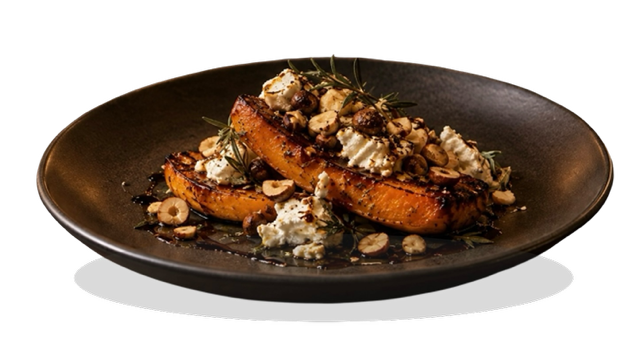
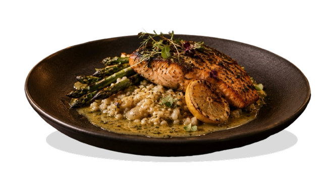
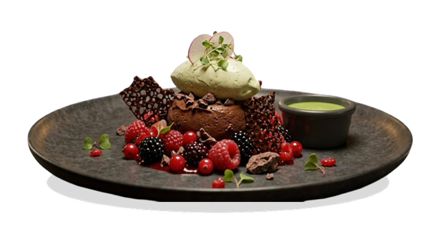
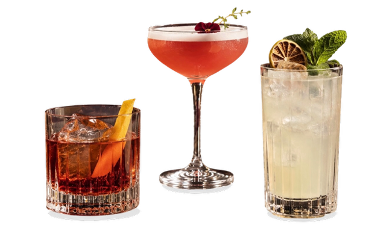
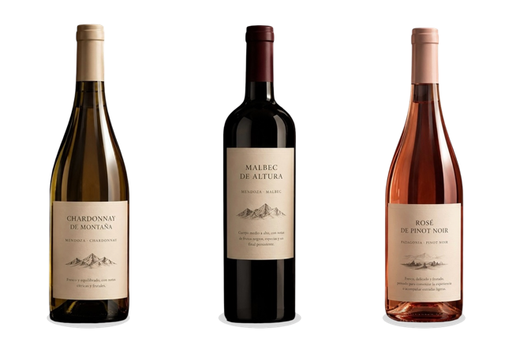

Umbral de Tierra
Lomo de ciervo sellado, crema de remolacha ahumada, hongos de estación y reducción de Malbec. El dulzor de la remolacha y la intensidad de la reducción acompañan la carne sin opacar su sabor.
Una propuesta que parte de productos locales y de estación para reinterpretar sabores argentinos desde una mirada contemporánea.
Lomo de ciervo sellado, crema de remolacha ahumada, hongos de estación y reducción de Malbec. El dulzor de la remolacha y la intensidad de la reducción acompañan la carne sin opacar su sabor.
Trucha patagónica curada, puré de coliflor tostada, hinojo fresco y emulsión de limón y hierbas. Una entrada fresca y delicada que combina productos argentinos con técnicas contemporáneas.
Calabaza asada a la brasa, queso de cabra, avellanas tostadas y salsa de miel de caña y romero. Una propuesta vegetariana que combina sabores dulces, ahumados y salados.

Ojo de bife argentino a la parrilla, acompañado de papas fondant, cebollas caramelizadas y salsa de Malbec y pimienta negra. La carne se presenta como protagonista, acompañada por una guarnición suave y una salsa intensa.
Trucha patagónica a la manteca de hierbas, acompañada de risotto de cebada perlada, espárragos y salsa de limón tostado. Una combinación equilibrada entre la suavidad del pescado, la textura del cereal y la acidez de la salsa.
Coliflor asada entera, crema de maíz criollo, zanahorias glaseadas y salsa de hongos. Una opción vegetariana de sabores profundos, donde los vegetales ocupan el centro del plato.

Chocolate amargo, frutos rojos, crema de yerba mate y crocante de cacao. Un postre intenso y equilibrado que combina amargor, acidez y diferentes texturas.
Dulce de leche, pera al Malbec, crema de vainilla y crumble de almendras. Una reinterpretación contemporánea de sabores tradicionales argentinos.

Gin argentino, vermut rosso, cordial de frutos rojos, bitter de hierbas y perfume de romero. Un cóctel aromático y equilibrado que representa la identidad de la casa.
Whisky, vermut rosso, reducción de yerba mate y bitter de naranja. Un cóctel intenso y de perfil especiado, inspirado en ingredientes de nuestra identidad local.
Gin, licor de sauco, jugo de pera, limón y tomillo fresco. Fresco, herbal y ligeramente dulce.

Mendoza · Malbec. Vino de cuerpo medio a alto, con notas de frutos negros, especias y un final persistente. Ideal para acompañar carnes rojas y preparaciones intensas.
Mendoza · Chardonnay. Fresco y equilibrado, con notas cítricas y frutales. Ideal para pescados, vegetales y preparaciones con salsas suaves.
Patagonia · Pinot Noir. Fresco, delicado y frutado, pensado para comenzar la experiencia o acompañar entradas ligeras.
